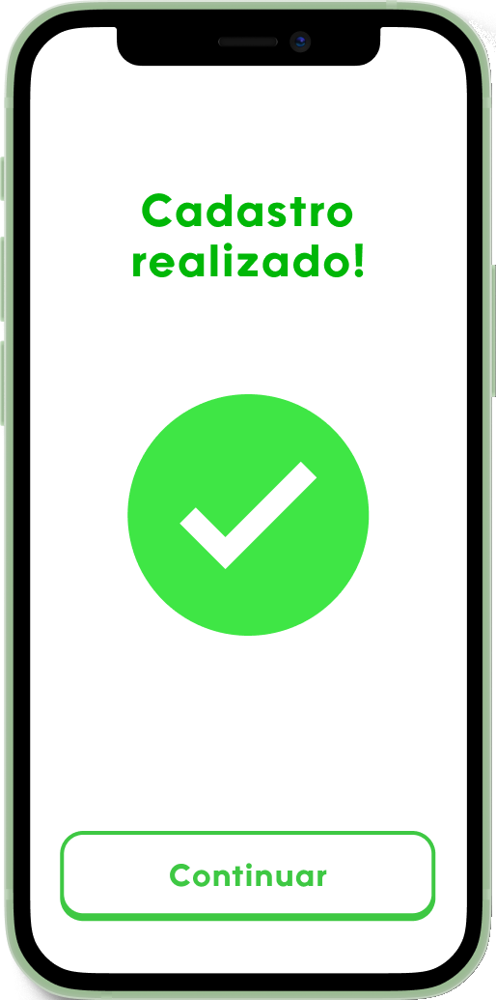
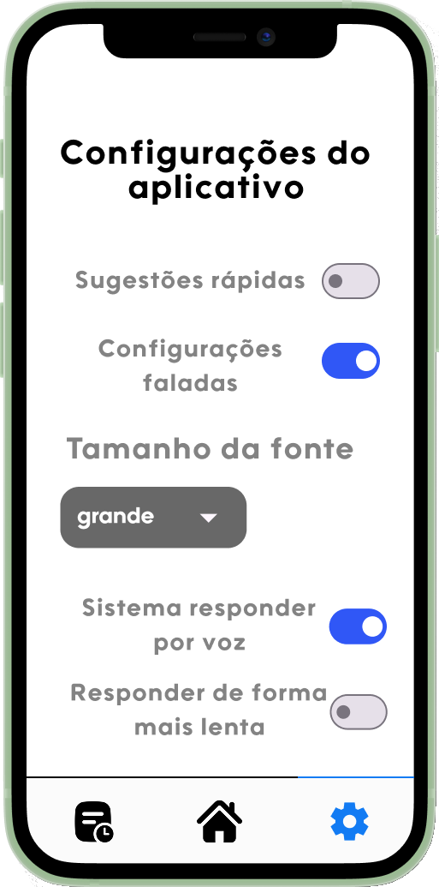
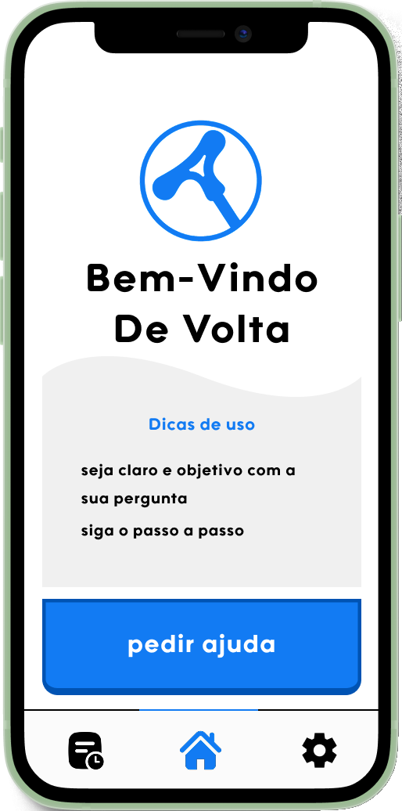
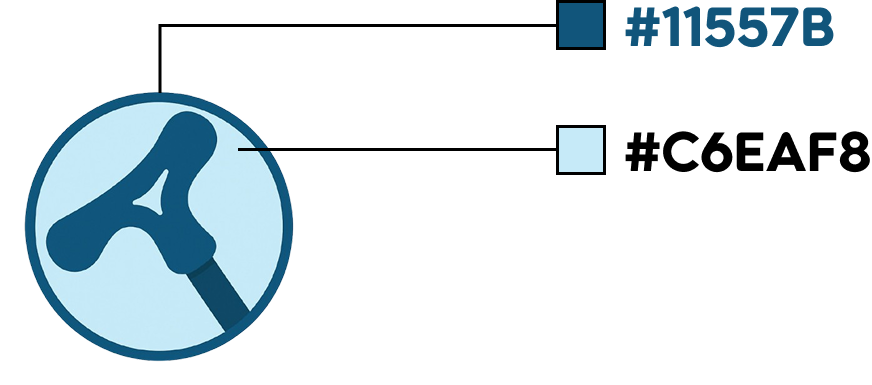

O que é o Apoio Digital?
O Apoio Digital é um aplicativo criado especialmente para ajudar pessoas idosas a usarem a internet de forma fácil, segura e independente. Ele funciona como um assistente pessoal, guiando o usuário passo a passo em tarefas como fazer videochamadas, enviar mensagens, acessar serviços online e muito mais.
Público Alvo
Os idosos frequentemente encontram obstáculos significativos durante sua jornada de inclusão digital, incluindo limitações físicas e cognitivas, como a diminuição da visão e habilidades motoras, que dificultam a assimilação das novas tecnologias.
O aplicativo
O aplicativo funciona como um assistente pessoal, onde o usuário poderá praticar como usar os aplicativos do dia a dia
Na tela de apresentação do app é deixado claro o que o software se propõe a fazer

O cadastro

O cadastro do usuário foi projetado para ser simples, com o intuito de facilitar a compreensão do usuário
A configuração

Como o publico alvo são idosos de diversas idades disponibilizamos diversas configurações em prol de deixar o aplicativo agradável para todos
Passo a passo do usuário
O usuário será disposto a um menu com diversos aplicativos separados por temas
Você pode interagir com a tela tocando nos botões

Design
Qual o objetivo?
Tornar a vizualiação mais acessível
Destacar os elementos certos
Fonte
A fonte escolhida para o software foi a Utendo, pois ela facilita a distinção das letras.
Logo

A escolha do símbolo de uma bengala, é para trazer a simbologia de ajuda normalmente voltado a idosos.

Além da bengala ser um caracter que faz alusão a Letra "A"
Cores
Cores principais do site
#127BF3
#DFDFDF
Cores da logo
